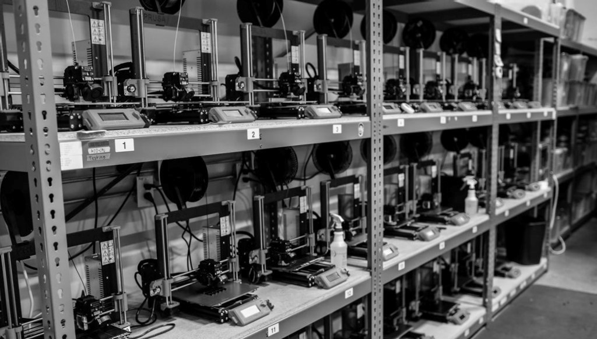
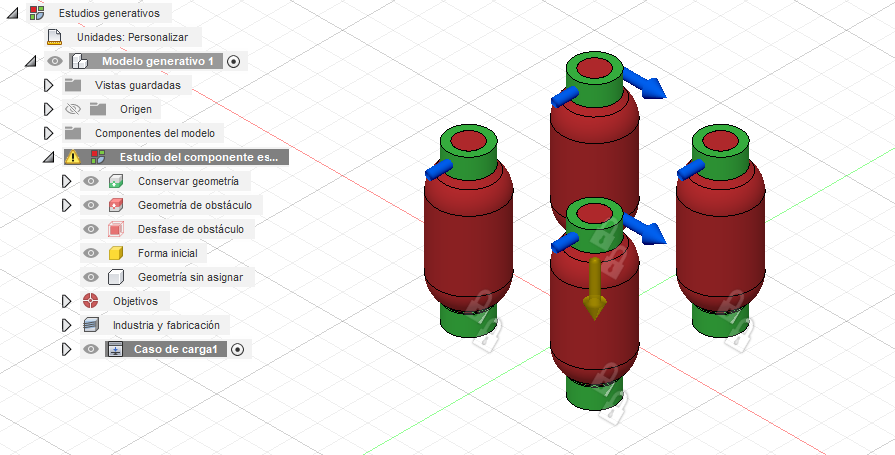
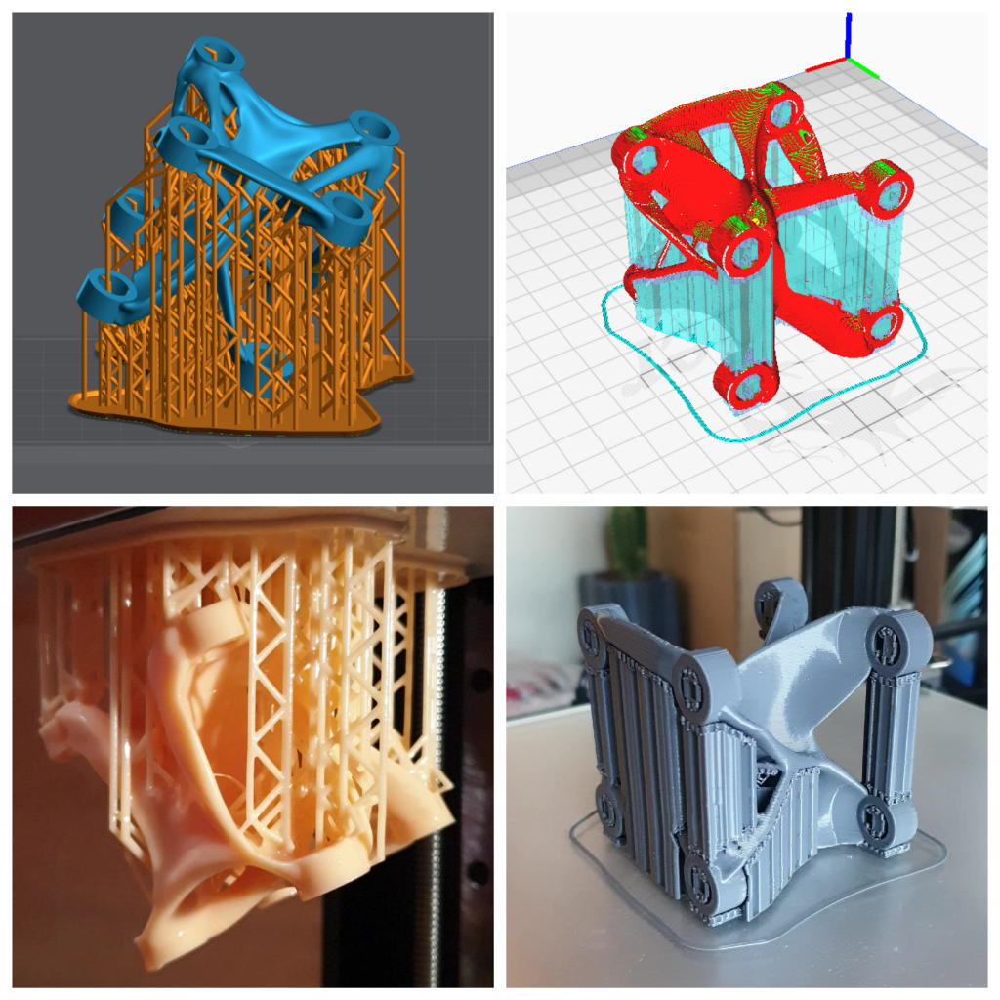
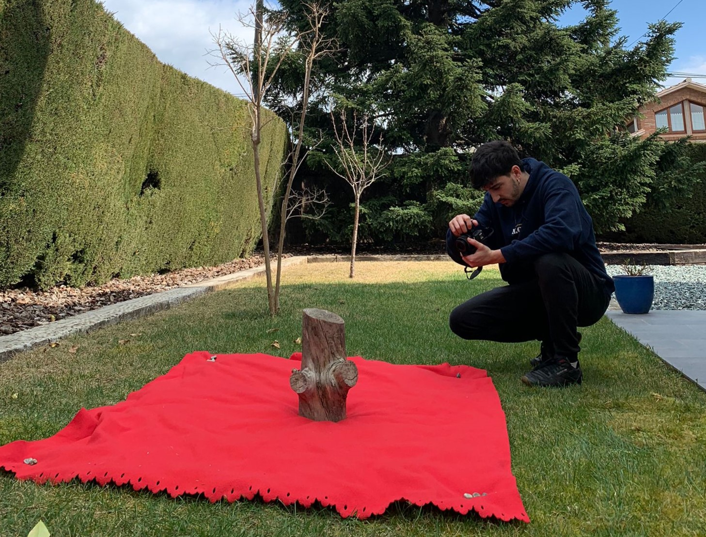
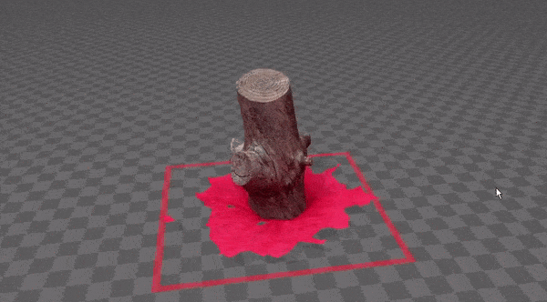

/3D_printing_&_scanning
(01_march_2022)
This week's topic of FabAcademy was 3D printing and scanning. During the theoretical class, the
FabLab team explained a bit the story of 3D printing, starting from the first SLA printers and
the RepRap project until nowadays where there are 3D printers for literally everything. They
also explained the functioning of the main 3D printing technologies (FDM, SLA, SLS, DLP) and
the materials that are normally used in each of them.
Secondly, we were told about how to slice a 3D modelled part to have the optimal result. Many
parameters have a direct effect on the final printed part such as layer height, infill,
directionality, shell, etc. It's necessary to set a proper configuration for each part, using a
slicing program like Cura, PrusaSlicer, Simplify3D or others. For that, you need to have the part
in a mesh format that can be STL, OBJ or 3MF generally.

After reviewing some other technologies for 3D printing and many techniques and materials, it was
the turn of 3D scanning. FabLab team made a short introduction to the meaning of 3D scanning and
then they proceeded to show us some ways of doing it using diverse programs and methods. One can
scan either with a depth sensor or a LiDAR or using a technique called photogrammetry, where one
takes hundreds of pictures of an object or a place from different angles and then a program puts
them all together and creates the volume. In class, we also tried to scan with a Kinect sensor
(from Xbox) using software called Scannect to create the mesh.
In the afternoon, we had an explanation on paste 3D printing, a topic which I'm quite interested
in since it is the one I have explored the least until now. They have modified an Ender-3 to be
able to print with any kind of paste such as clay or whatever that can stand up after being printed.
They showed the mechanism used and the slicing program, that was created with Grasshopper. Then we
printed a vase with mashed potatoes to test it.
.3D_printing_a_computer-generated_part
The task for this week was pretty clear: 3D print something that you have designed that can only
be built with additive manufacturing techniques. Simplifying, something with complex shapes or
patterns that would be difficult to do with injection, CNC or else.
In my case, I decided to keep exploring a topic that I'm interested in: generative design with
Fusion 360. I modelled 8 cylinders split into two planes and applied some forces (a bit random)
that would be there in case we used this part as a joint.

Then the program started creating
iterations and alternatives in the design and I finally chose the one below, that isn't way too
thick nor way too thin.
Luckily, I have an FDM and a DLP printer at home so, even being confined I could test to print the design I made. I sliced the part in Cura for the FDM printer and in Lychee for the DLP printer, setting the necessary supports and other configurations for each. I printed the part in both technologies to check the differences in appearance, strength and complexity. For the FDM I used PLA and for the DLP Water Washable resin. These are some pictures of the process:

Finally, I cleaned the support structures and tested gently the strength of both parts. Thanks to producing these two parts I learnt quite a lot about generative design and now I know some tips and tricks that will help me for the next design. Also, I like better the result obtained with the resin printer since it's more accurate, the surface is much softer and even having many supports, they are much easier to remove than with the FDM printer. It was also faster to print. However, the resin is more expensive, the process of cleaning everything is a bit tough and it produces strong gases that are quite toxic. I guess every process has its pros and cons. This is the final result of both parts:
.scanning_with_meshroom
As a bonus, I wanted to explore the possibilities of Meshroom, an open software for photogrammetry
with a lot of options and great performance. I chose an organic object, in this case a 40cm tall
log, and prepared an appropiate scene to take the pictures: no direct light, a monochromatic
background and the fewer interferences possible. Then I started taking pictures from every angle
using different techniques. I took approximately 120 pictures of the log and imported them to
Meshroom.

Inside the program, I had some issues that I finally solved. The first one was to have the pictures
in a folder that contained non-ASCII characters. The second one was because my computer didn't
have CUDA GPU form nvidia and this didn't allow me to create a Depth. However, by changing some
of the connections from the tree, I managed to create the mesh anyway, maybe with a bit less of
detail since the Depth Map couldn't be created, but still with a pretty amazing result. It also
created the texture of the log from the pictures.

This is the map Meshroom created automatically from the pictures I imported. It is easy to
see the dome I made with my movements while taking pictures, targeting the log all the time. I was really
impressed to see how easily the program could locate each picture in space. It is not hard to see how
well developed this programme is.